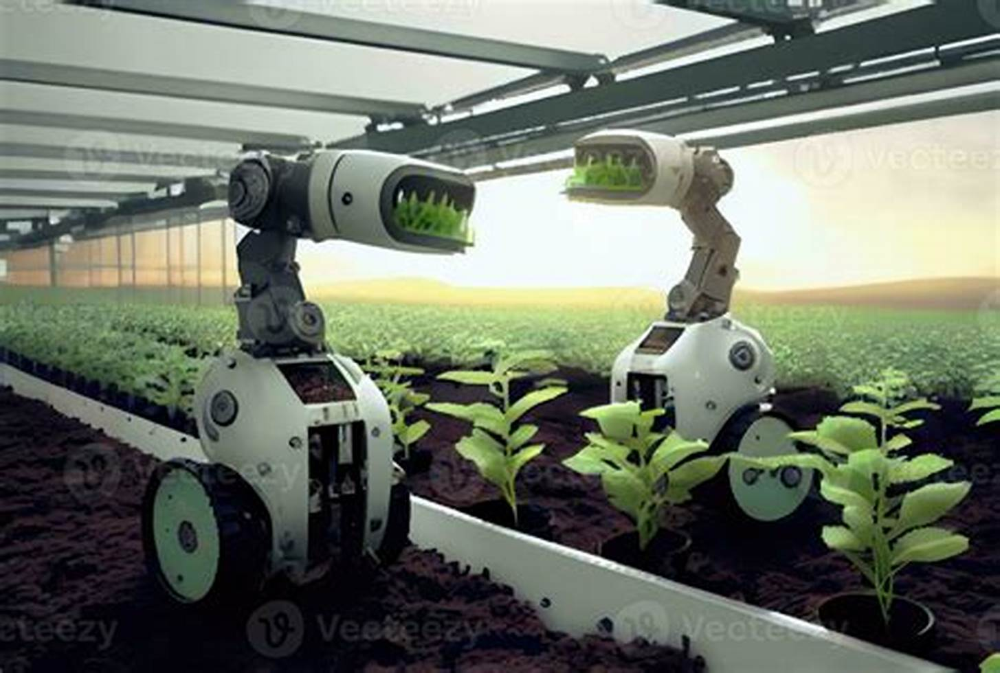
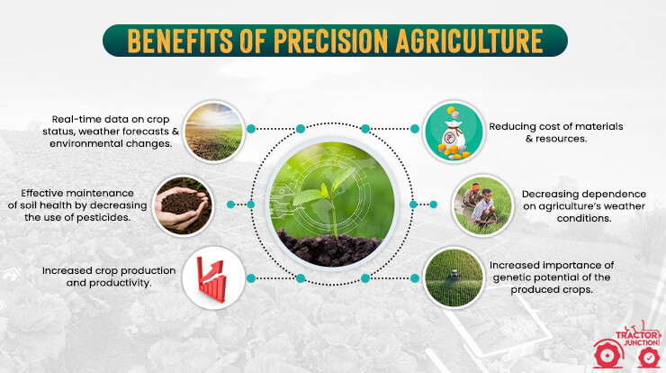

Introduction to Smart Robotic Farmers

Smart robotic farmers represent the cutting edge of agricultural technology, using AI and robotics to automate farming tasks, reduce labor costs, and increase efficiency. These autonomous machines are capable of planting, monitoring, and harvesting crops with minimal human intervention.
Benefits of Smart Robotic Farmers

- Labor Savings: Automation reduces the need for manual labor, lowering costs and addressing labor shortages.
- Precision Farming: Robots perform tasks with high precision, improving crop yields and resource efficiency.
- 24/7 Operation: Robotic systems can work around the clock, increasing productivity and operational efficiency.
- Data Collection: Integrated sensors collect valuable data on crop health and environmental conditions.
Applications of Smart Robotic Farmers

- Seeding and Planting: Robots plant seeds with precision, ensuring optimal spacing and depth.
- Weeding: Autonomous weeding robots reduce the need for herbicides and manual labor.
- Harvesting: Robots can harvest crops efficiently, reducing waste and labor costs.
- Monitoring: Robots equipped with cameras and sensors monitor crop health and growth.
- Soil Analysis: Robotic systems analyze soil conditions to optimize irrigation and fertilization.
Case Study: Robotic Harvesters

Background
In 2023, a vineyard in California implemented robotic harvesters to automate grape picking. The goal was to increase efficiency and reduce labor costs during the harvest season.
Implementation
The vineyard deployed robotic harvesters equipped with cameras and AI algorithms to identify and pick ripe grapes. The robots operated continuously, covering large areas of the vineyard.
Results
- Increased Efficiency: Harvesting time was reduced by 30%, allowing for a quicker and more efficient harvest.
- Cost Reduction: Labor costs were reduced by 25%, significantly cutting operational expenses.
- Improved Quality: The precision of the robots resulted in less damage to the grapes and higher quality produce.
Future Trends in Smart Robotic Farmers

- Enhanced AI: Future robots will feature more advanced AI for better decision-making and adaptability.
- Increased Autonomy: Robots will become more autonomous, requiring less human intervention.
- Collaboration with IoT: Integration with IoT devices will enhance data collection and farm management.
- Advanced Robotics: Improvements in robotics will lead to more efficient and capable machines.